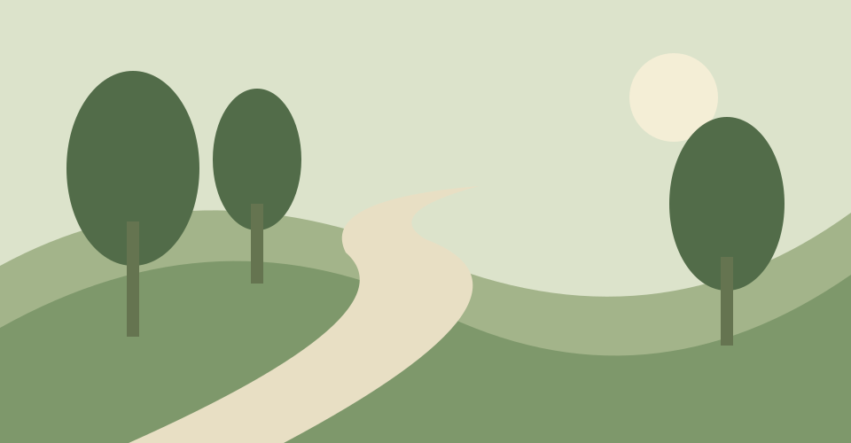

VISUAL NOTEBOOK
Shapes from the garden
Three impressions of a familiar place.

Details stay together
The same path takes on a different character throughout the day: cool green in the morning, warm ochre toward evening.
Small Collections · October 2026